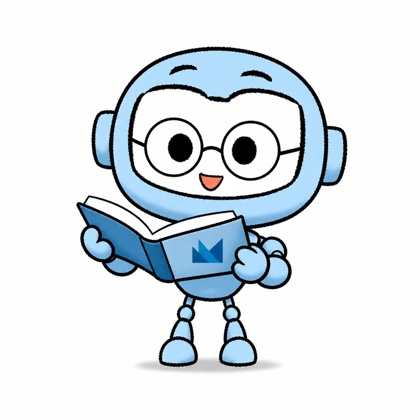
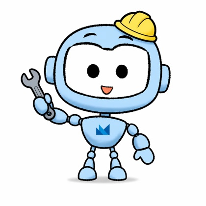
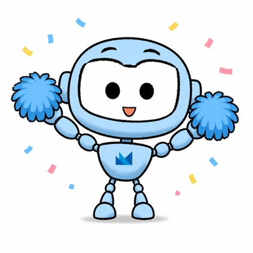
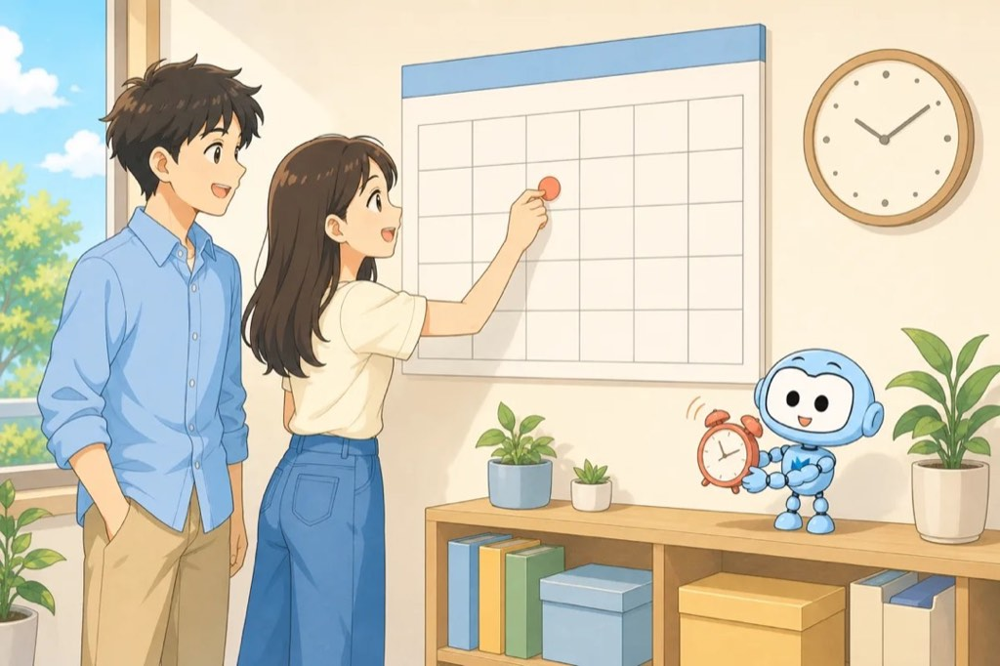

NEXMAX ACADEMY
AIの
時代
じだい
プログラマーから PMへ
PM = Project Manager
クイズ
いま、プログラムは
だれが
書
か
いて いますか？
先
さき
に
考
かんが
えて みましょう。
答
こた
えは つぎの ページです。
program = プログラム
すこし
前
まえ
まで
AIは
人
ひと
の
手
て
つだいでした
書
か
くのは
人
ひと
。
AIは となりで お
手
て
つだい。
assistant = 手つだい
いま（2026
年
ねん
）
AIが ほとんどの プログラムを
書
か
きます
Google
75%
2026
Microsoft
30%
2025
Anthropic
90%+
2026
AIが
書
か
いた プログラムの わりあいです。

出典
しゅってん
:
各社
かくしゃ
の
発表
はっぴょう
（2025–2026）
さらに
人
ひと
の チェックも
へって います
コードを
読
よ
まない
プログラマーも います。
check = たしかめる こと
今
いま
までの チーム
PMが クライアントと
話
はな
します
新人
しんじん
は プログラミングから
始
はじ
めれば OKでした。
client = お客さま
これからの チーム
プログラムは AIの
仕事
しごと
に なります
クライアント
お
客
きゃく
さま
⇄
PM
あなた！
→

AI
プログラムを
書
か
く
あなたの
仕事
しごと
は、
作
つく
る ことから 「まとめる こと」へ。
だから
みなさんに PMの
力
ちから
が
必要
ひつよう
です
クライアントの そばに
立
た
つ
仕事
しごと
です。
PM = Project Manager
世界
せかい
の いま ①
アメリカ:
大
おお
きな IT
会社
かいしゃ
が
人
ひと
を へらして います
Microsoft
約1.5
万人
まんにん
2025
Amazon
約3
万人
まんにん
2025–26
Meta
約10%
2026
出典
しゅってん
:
各社
かくしゃ
の
発表
はっぴょう
・
報道
ほうどう
（2025–2026）
世界
せかい
の いま ②
中国
ちゅうごく
の
大
おお
きな
会社
かいしゃ
でも
約13
万人
まんにん
↓
1
年
ねん
で へりました。
Alibabaは
社員
しゃいん
が 約3
分
ぶん
の1 へりました。
出典
しゅってん
:
報道
ほうどう
（2025–2026）
世界
せかい
の いま ③
ハーバードを
出
で
ても、
仕事
しごと
さがしは
大変
たいへん
4
人
にん
に
1人
ひとり
は、
卒業
そつぎょう
の 3か
月後
げつご
も
仕事
しごと
が
見
み
つかりません。
Harvard = アメリカの
有名
ゆうめい
な
大学
だいがく
出典
しゅってん
: Harvard Business School の
発表
はっぴょう
（2024
年度
ねんど
・MBA）
でも、
日本
にほん
には
チャンスが あります！
chance = チャンス
理由
りゆう
1
日本
にほん
の
会社
かいしゃ
は、かんたんに
人
ひと
を やめさせません
長
なが
く
安心
あんしん
して
働
はたら
けます。
理由
りゆう
2
日本
にほん
は ITの
人
ひと
が
足
た
りません
2030
年
ねん
に
最大
さいだい
79
万人
まんにん
だから
会社
かいしゃ
は
人
ひと
を さがして います。
出典
しゅってん
:
経済産業省
けいざいさんぎょうしょう
の
調査
ちょうさ
（2019）
理由
りゆう
3
AIを まだ
使
つか
って いない
会社
かいしゃ
が
多
おお
い
日本
にほん
の
会社
かいしゃ
の AI
導入
どうにゅう
41.2%
2025
半分
はんぶん
より
少
すく
ない。
→ これから AIを
入
い
れる
仕事
しごと
が たくさん
生
う
まれます。

出典
しゅってん
:
総務省
そうむしょう
情報通信白書
じょうほうつうしんはくしょ
（2025）
もう ひとつの
秘密
ひみつ
日本
にほん
は
会社
かいしゃ
の
数
かず
が とても
多
おお
い
日本
にほん
約553
万
まん
アメリカ
約566
万
まん
カンボジア
約4.6
万
まん
人口
じんこう
は アメリカの
半分
はんぶん
。でも
会社
かいしゃ
の
数
かず
は ほぼ
同
おな
じ。
出典
しゅってん
:
各国
かっこく
の
統計
とうけい
（
会社
かいしゃ
の
数
かず
の
数
かぞ
え
方
かた
は
国
くに
で
少
すこ
し ちがいます）
だから
小
ちい
さい
会社
かいしゃ
に
ビジネスチャンス！
今
いま
まで アプリを
作
つく
る お
金
かね
が なかった
会社
かいしゃ
も、AIと いっしょなら
作
つく
れます。
business chance =
商売
しょうばい
の チャンス
これから
磨
みが
く
力
ちから
PMに
大事
だいじ
な ことは 3つ
①
コミュニケーション
communication
②
時間
じかん
の マネジメント
time management
③
お
金
かね
の マネジメント
money management
①が
一番
いちばん
大事
だいじ
です。
①
一番
いちばん
大事
だいじ
コミュニケーション
クライアントの やりたい こと、
作
つく
りたい アプリを よく
聞
き
いて
知
し
ります。
communication
client = お客さま
②
時間
じかん
の マネジメント
約束
やくそく
の
日
ひ
までに
終
お
わる
計画
けいかく
を
立
た
てます。
time management

③
お
金
かね
の マネジメント
いくら かかるかを
考
かんが
えて、お
金
かね
の
計画
けいかく
を
立
た
てます。
money management
この
授業
じゅぎょう
では、
コミュニケーションを
中心
ちゅうしん
に
練習
れんしゅう
します！
いっしょに がんばりましょう。